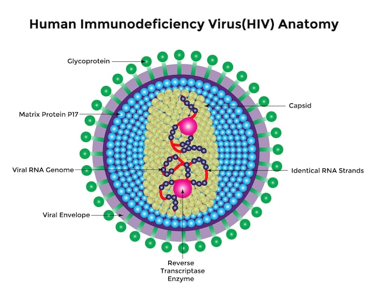
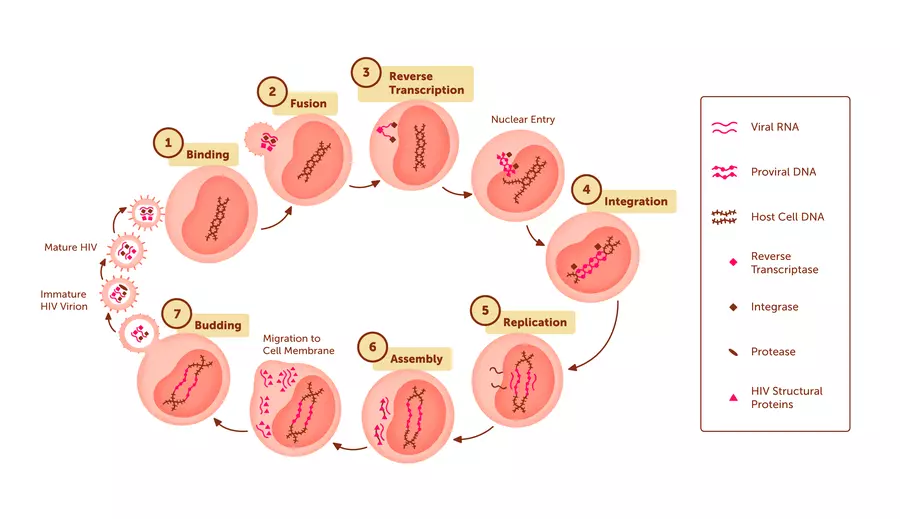
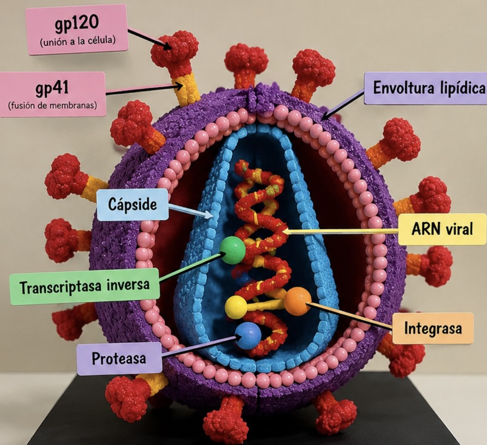

¿Qué es el VIH?
El VIH es el Virus de la Inmunodeficiencia Humana. Ataca principalmente células del sistema inmunitario, en especial los linfocitos T CD4, que ayudan al organismo a defenderse de infecciones. Sin tratamiento, la infección puede avanzar y llegar a la etapa más avanzada, llamada síndrome de inmunodeficiencia adquirida (SIDA).
Estructura del VIH
El VIH es un retrovirus con envoltura. La maqueta representa de forma didáctica sus componentes principales; los colores son una elección visual y no corresponden necesariamente a los colores reales de las estructuras.

Membrana externa que rodea al virus.
Proteínas de la envoltura que participan en la unión y entrada a la célula.
Cubierta proteica interna que contiene el material genético y enzimas virales.
Material genético del VIH.
Enzima que produce ADN a partir del ARN viral.
Enzima que permite integrar el ADN viral al ADN de la célula.
Enzima que ayuda a procesar proteínas para formar partículas virales maduras.
¿Cómo actúa en el organismo?

1. Unión
Las proteínas virales se unen a receptores de la superficie de una célula CD4.
2. Entrada
El virus introduce su material genético y enzimas en la célula.
3. Copia e integración
La transcriptasa inversa convierte el ARN viral en ADN y la integrasa ayuda a incorporarlo al ADN celular.
4. Producción y maduración
La célula produce componentes virales; la proteasa participa en la maduración de nuevas partículas.
¿Cómo se transmite?
El VIH puede transmitirse cuando determinados líquidos corporales de una persona con VIH —como sangre, semen, fluidos vaginales o rectales y leche materna— entran al organismo de otra persona. Las vías incluyen ciertas prácticas sexuales, compartir agujas o jeringas y la transmisión durante el embarazo, parto o lactancia.
El VIH NO se transmite por:
- Abrazar, dar la mano o convivir cotidianamente.
- Compartir alimentos, vasos o cubiertos.
- Usar el mismo baño o piscina.
- Picaduras de mosquitos.
La convivencia cotidiana con una persona que vive con VIH es segura. La información correcta ayuda a evitar el estigma y la discriminación.
Prevención y detección
Pruebas
La prueba del VIH es la única forma de conocer el estado serológico. La detección permite acceder oportunamente a atención y tratamiento.
PrEP y PEP
Son opciones médicas de prevención: PrEP se utiliza antes de una posible exposición y PEP después de una posible exposición; esta última debe iniciarse cuanto antes y dentro de las 72 horas.
Otras medidas
Uso correcto del condón, no compartir agujas o jeringas y recibir orientación de profesionales de salud.
¿Existe tratamiento?
Sí. El tratamiento se llama terapia antirretroviral (TAR). No elimina por completo el VIH, pero impide que se reproduzca eficazmente, reduce la cantidad de virus en la sangre y ayuda a mantener el sistema inmunitario saludable.
Cuando una persona sigue el tratamiento y mantiene una carga viral indetectable, no transmite el VIH por vía sexual. Este principio se conoce como Indetectable = Intransmisible (I=I).
La maqueta: representación del VIH
Este modelo escolar permite identificar visualmente las partes principales del virus y relacionarlas con su función.

Diámetro de la esfera
Equivale a 15 cm.
Base
Medidas de la base de la maqueta.
Altura de base
Altura de la base de la maqueta.
Altura aproximada total
Altura total aproximada según el montaje.
Las dimensiones corresponden a la maqueta artesanal, no al tamaño real del VIH. El modelo no está a escala microscópica.
Descripción
La maqueta representa la estructura del VIH mediante una esfera con envoltura externa y una sección abierta que permite observar la cápside, el ARN viral y las enzimas.
Relevancia
Facilita comprender cómo está formado el VIH, cómo infecta células del sistema inmunitario y por qué son importantes la prevención, las pruebas y el tratamiento.
Fuentes de información
Contenido elaborado a partir de organismos oficiales de salud. Consulta las fuentes para ampliar la información:
- Centros para el Control y la Prevención de Enfermedades (CDC). Acerca del VIH.
- Organización Mundial de la Salud (OMS). VIH y sida.
- NIH, HIVinfo. Understanding How HIV Is Transmitted.
- NIH, HIVinfo. HIV Treatment: The Basics.
Material educativo. No sustituye la orientación, el diagnóstico ni la atención de profesionales de salud.